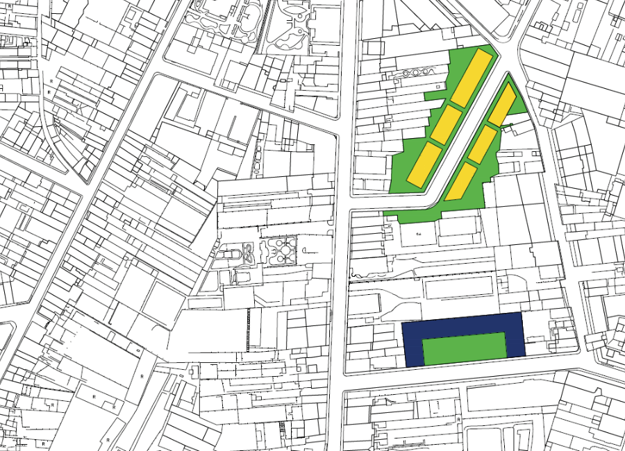

Civil engineeeing student with experience in BIM and CAD software and a focus on Urban Planning and Mobility.
Currently writing my Master thesis in Chalmers University of Technology, focusing on evaluating urban participatory and co-design processes.
Working also as a soft skills trainer for a technology student NGO, developing leadership and HR skills.
The goal of this project was to understand the morphology of an Slovenian residential area, as well as analysing the traffic infrastructure and green spaces. The concept of a mental map was explored and experimented.
The project culminated with a housing design sketch using AutoCAD, taking into consideration all the points previously mentioned.
The goal of this project was to understand Demand Responsive Transport as a solution for rural areas and to elaborate a comparison study in order to assess the viability of a DRT system in a rural municipality in northern Portugal.
For this study, a municipality in Norway with a similar population density and area and other one in Portugal were used for comparison. Moreover, a SWOT analysis of the target municipality was done, taking as a support material a mobility study performed in the region.
The aim of this study was to perform a user and usage analysis of the university area covered by Metro do Porto. Some field interviews were conducted, and alongside the official data provided by Metro do Porto, an impact study was performed.
A user profile was defined based on the data gathered and each station of the corresponding zone was studied in order to understand the peak hours and the user flows. A comparison was done with the data gathered from students of previous years, dating back to 2006.
The aim of this project was to undertake a social and environmental impact assessment of a new subway line in the city of Porto, using the EIA method.
The study involved proposing new solutions for the road traffic foreseen during the construction phase, to indicate areas where noise impacts will be most important or high and to determine the appropriate areas for the location of the construction sites.
The purpose of this research is to create a tool for measuring the impact of projects with a participatory and co-design focus and implement it. The projects that will be studied were integrated into past workshops of the studio Design and Planning for Social Inclusion provided by the Master’s Programme Design for Sustainable Development.
Ultimately, this research aims to develop an evaluation methodology, to be applied in future projects and plans.
Due to time constraints, this master thesis will focus on the implementation of the impact evaluation framework only to few interventions although several other studies will be reviewed and analysed in order to define the main criteria for the evaluation.
By learning, analysing and evaluating the impact of these past projects, this research aims to be not only a more thorough learning experience about participatory and co-design processes but also to contribute to this design studio’s next projects, with a sound impact evaluation framework.

The aim of the proposed project is to expand the practical exercise of reading a city through analysis, discussions with different backgrounds and a diagnosis based on the assumption of improving the space for the city users.
The project consisted in analysing a block in the city of Porto, signaled by the municipality for a potential intervention to improve the urban quality of that area. A characterization of the area was made, as well as an acessibility analysis and the identification of important landmarks.
A preliminary program was proposed based on a diagnostic analysis according to the design qualities proposed in the book Responsive Environments (Bentley et al., 1985).